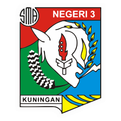

SMAN 3 Kuningan

Satuan Latihan (Satlat) Center SMA Negeri 3 Kuningan merupakan salah satu unit latihan paling vital dan berprestasi di bawah naungan Perguruan Silat PBSS (Paguyuban Barudak Silat Sekolah) Kuningan. Sebagai sebuah "Center" atau pusat latihan yang berbasis di salah satu sekolah unggulan di Kuningan, Satlat ini memiliki peran strategis dalam peta kekuatan pencak silat prestasi di wilayah tersebut.